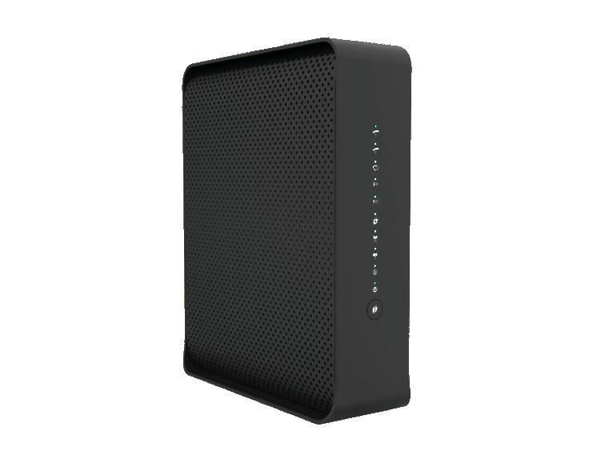
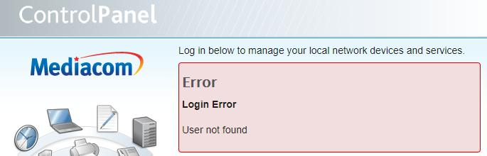
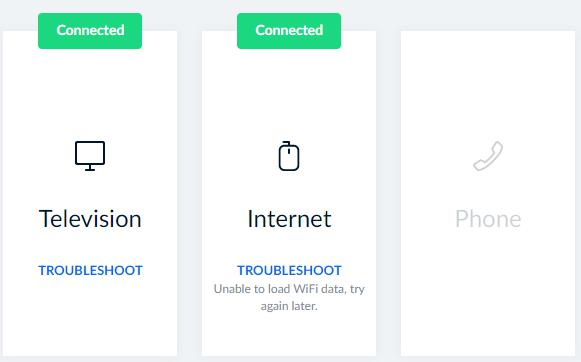
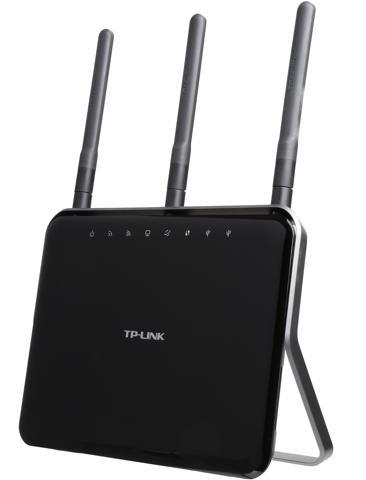
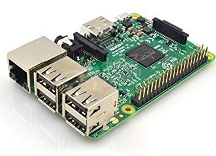
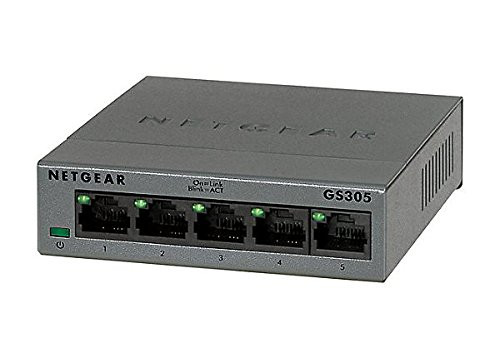
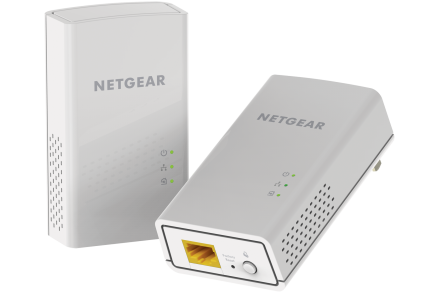
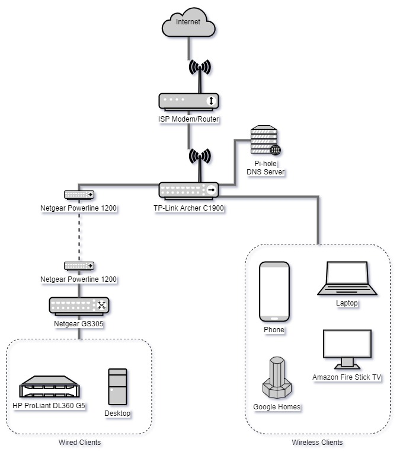

Building a Home Network on a Budget

Table of Contents
Background
At the time of writing, I’m currently co-oping at Collins Aerospace, whom are nice enough to provide me a 3-floor townhouse. Since this is the first time I’ve lived somewhere where I can setup my own network, I just wanted to write up how I’ve done it.
Network Infrastructure
Here are the components of my home network infrastructure.
Technicolor Modem - $11.50/Month

This is modem/router combo provided by my ISP (Mediacom). While I would normally buy my own equipment, since I’m only going to be at this place for a few months, I decided to just rent it instead from my ISP instead.
Unfortunately, despite my best efforts, I have yet to figure out how to even login to the web management portal to disable it’s WiFi, since I just want to use it as a modem, and not a router.


TP-Link Archer C1900 - $34.99

I managed to snag a refurbished unit in a Newegg flash deal for $34.99.
This is my WiFi access point for my network along with my DHCP server. Unfortunately, as mentioned above, since I haven’t been able to get into my ISP modem/router, I’m currently broadcasting multiple WiFi networks right next to each other. I got this because I wanted more control (like changing DNS servers) than I was positive the ISP provided router would allow.
Also, very usefully, this router has a USB port on it. I believe it’s for setting up a printer, but it does provide enough amperage to power a Raspberry Pi (see below).
Raspberry Pi 3 Model B - Free

I got a free Raspberry Pi 3 a few years back when Arrow was running a promotion for Pi day (March 14), where they were selling Raspberry Pi’s for $3.14. Well, their website crashed under the load, and the next day they gave a bunch away for free to people like me who tried to place an order.
I now have my Pi 3 acting as DNS server for my network with Pi-hole (I really like the https://dbl.oisd.nl/ blocklist). Thanks to the USB port on my router, I just have it sitting physically right next to my router and directly plugged in.
Netgear GS305 - $19.99

Not much to say about this. It’s a basic 5-port gigabit unmanaged switch. I’ve had it for a few years.
Netgear Powerline 1200 - $79.99

This one hurt the most to purchase. For best WiFi coverage, I have my router sitting on the main floor of my townhouse. My desktop computer and server, however, are both located downstairs. As I didn’t want to use WiFi for those, there weren’t many options to get ethernet down into the basement.
- Run 200ft ethernet cable across and over living room, down staircase, around corner, and down hallway.
- Punch holes in the floor and run cable.
- Powerline adapters.
Option #1 is not practical, and I don’t think my landlord would really like option #2. I had heard of powerline adapters before, but just had never used them before. I really wanted to get my server back up and running, so I decided to give it a shot and went to my local Best Buy and bought a pair of Netgear Powerline 1200.
So far, I’ve been satisficed. The bandwidth is a bit less than my 5Ghz WiFi, but the latency is noticeably less. I use the Netgear switch mentioned above to split the connection to my desktop and server.
Diagram

Conclusion
Quick summary:
- Technicolor Modem: Modem
- TP-Link Archer: Router, DHCP, WiFi
- Raspberry Pi: DNS
- Powerline Adapters: Getting ethernet into basement
- Netgear Switch: Splitting powerline connection
For $34.99 and $11.50 monthly (and miscellaneous cables), I have a pretty solid home network with 2.4 and 5GHz WiFi (though I don’t use the 2.4GHz since everything these days supports 5GHz AC), an isolated guest network, and network-wide ad-blocking via Pi-hole. I also have true gigabit for everything within the network (very helpful for my local Nextcloud instance). For another $100, I have ethernet in my basement for all of my fixed devices (a cost I don’t like thinking about).
I’m a bit of a statistics nerd, so I would love a way to see which devices are connecting to what domains, how much bandwidth they’re using, etc., but I have not found a software solution to this. My router does allow you to see how many bytes each device sends and receives, but that’s it. I know I can sort of estimate it with Pi-hole and seeing what DNS queries devices are making, and how often, but I’d love a solution similar to Glasswire, but for the whole network. Unfortunately, I don’t think there’s a way to accomplish this without using a different router (like a pfSense box) completely (a step I’m not willing to take yet).